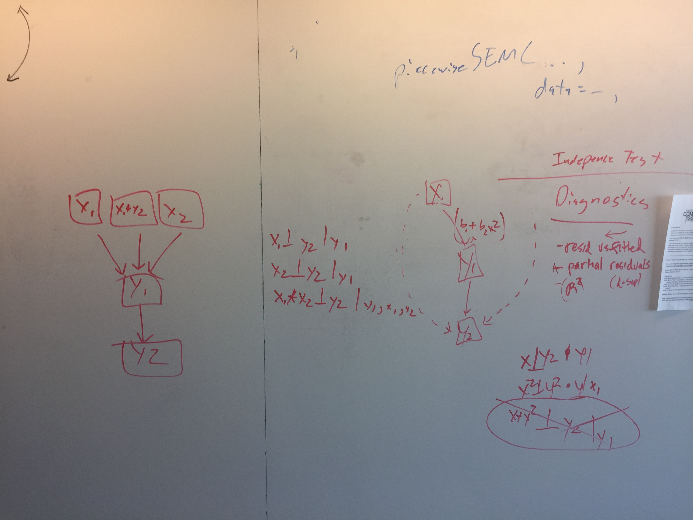
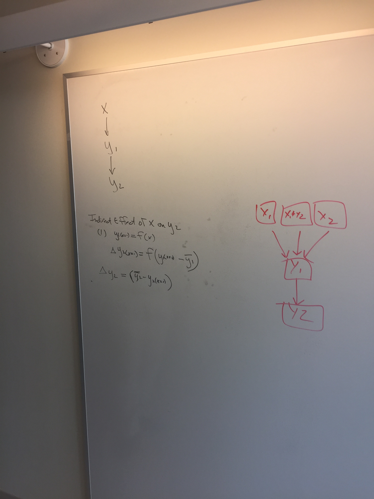
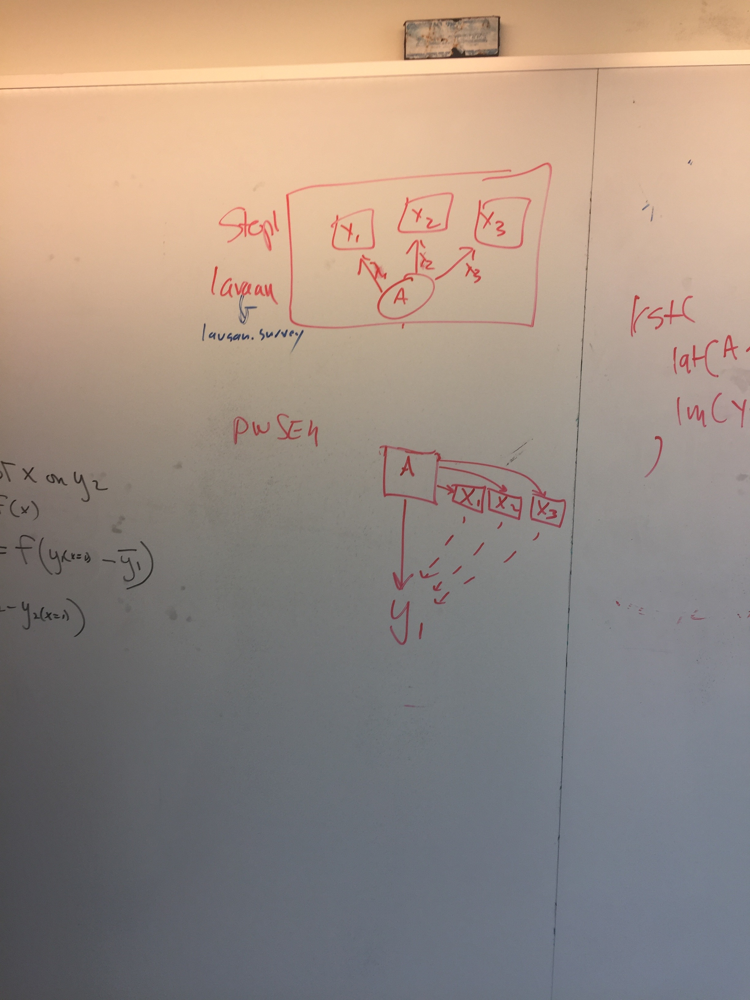
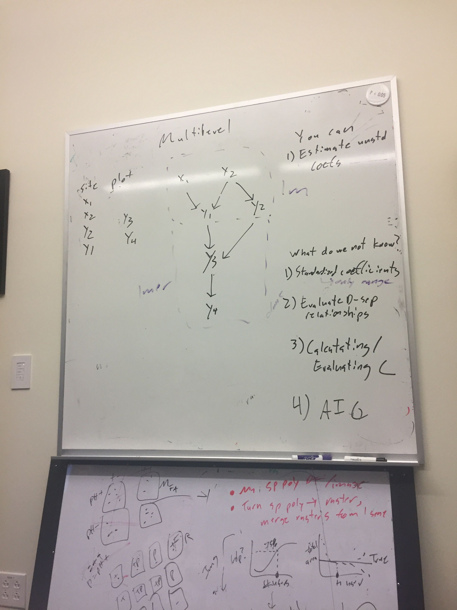
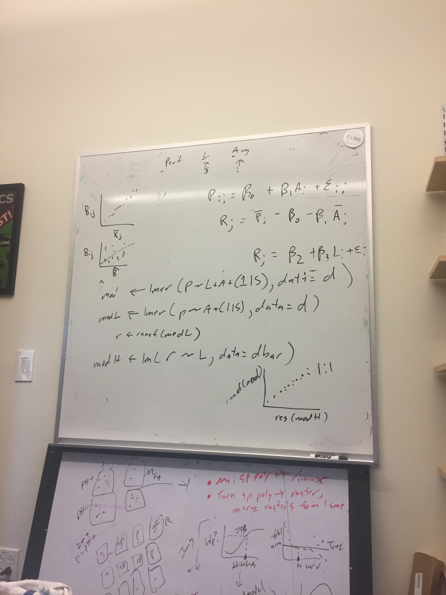
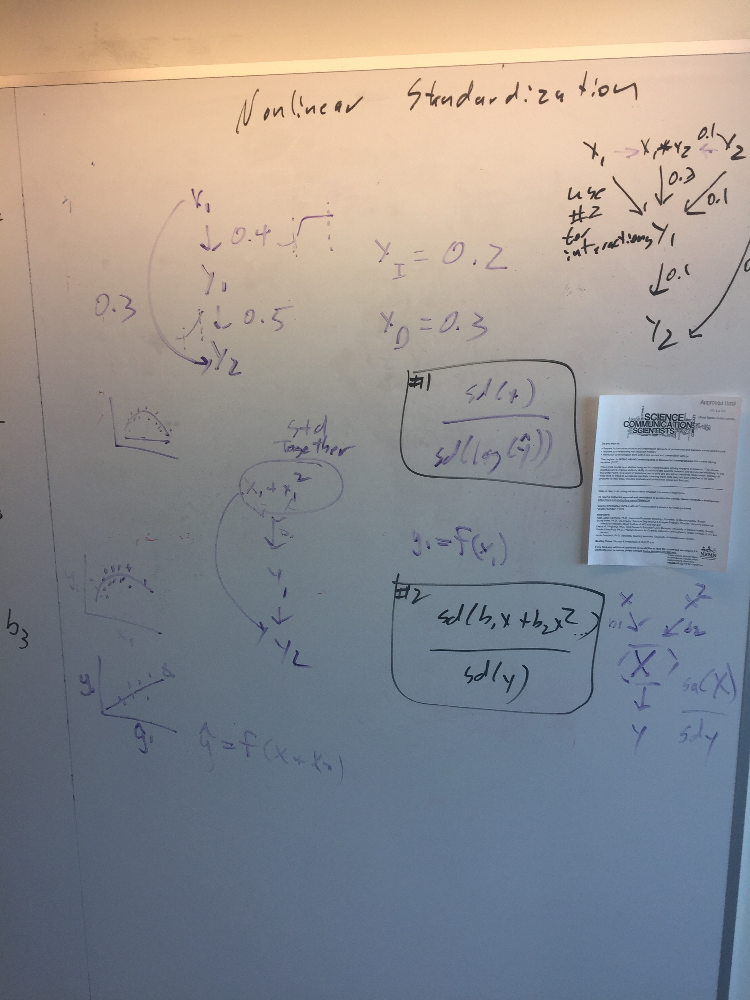
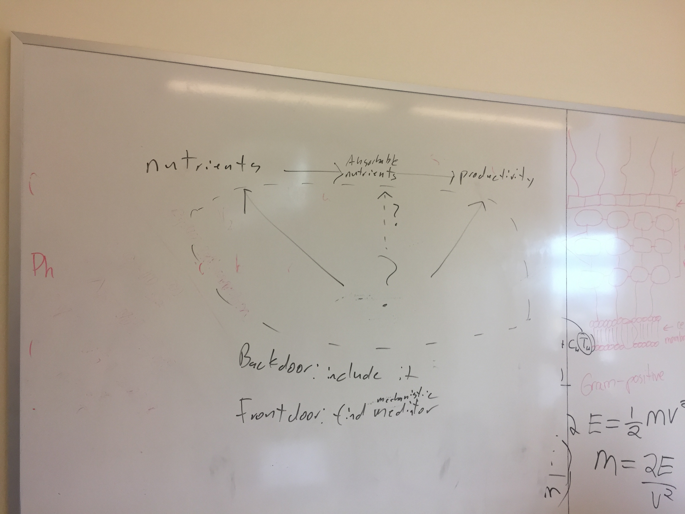
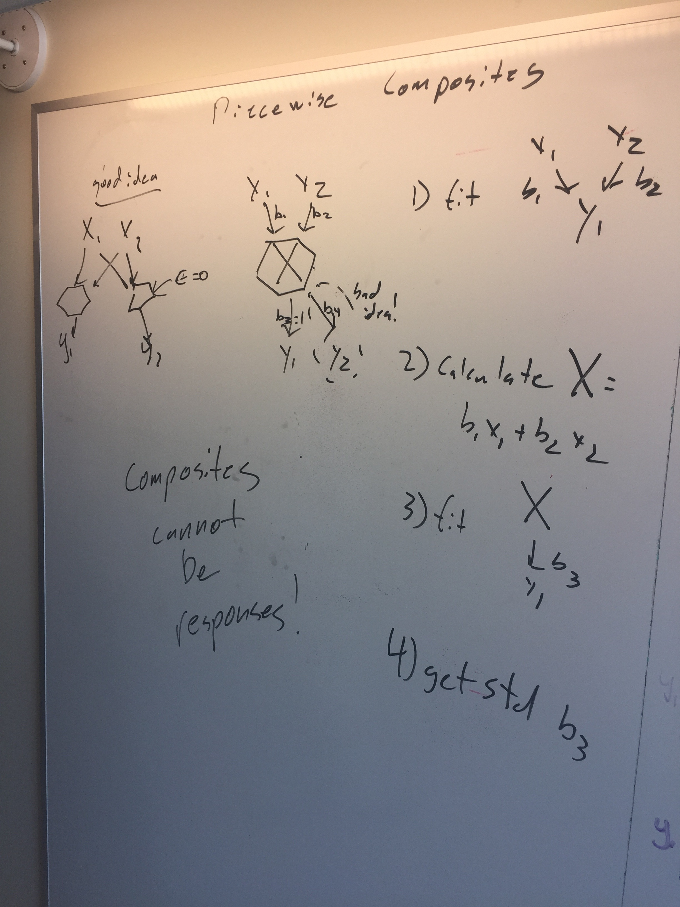

A Agenda and Notes from February Meeting
- Setup bookdown x
- Create roadmap for this meeting x
- Create a roadmap for an SEM learner
- Formalizing how exogenous variables are included in the basis set x
- Maybe provide an additional output of correlation between exogenous variables
- But - no reason to include those in calculating Fisher’s C
- Maybe provide an additional output of correlation between exogenous variables
- Can you statistically compare two C statistics? Yes. x
- Use C for LRT
- GLMs and C-statistics x
- low hanging urgent fruit
- Nonlinearities and the C-statistics x
- Polynomial terms
- Interaction effects
- Jim says ignore them, then says don’t
- ignore, but diagnostics are separate from independence tests

- Polynomial terms
- Testing indirect effects x
- p-values based tests, etc.
- Nah - don’t do p-value based testing
- Can use Jarrett’s predict function to get total effect
- Can then subtract direct effect if it is there
- Other tests of indirect pathways need to be done by hand 
- p-values based tests, etc.
- Latent Variables in a Piecewise Framework x
- Can you use factor scores as another variable in the model 
- Fitting and evaluating True multilevel models
- In a nutshell, you need to capture those intercepts into a different model in a separate dataset
- Algorithmic solution?
- Talked about it a lot in the context of a single multilevel model
- Where does this enter into SEM?
- We can evaluate d-sep relationships
- We can calculate range standardized coefficients, but not classical Std. Coefs
- We do not know how to properly calculate C
- We do not then know how to translate into AIC, or how to work with BIC  
- Standardized coefficients for nonlinear variables & glms x
- HAHAHAHAHA - man have we failed here so far…
- But Jim provides hope!
- And then we nail it
- denominator SD uses the link function
- Numerator is a block of linear and nonlinear variables combined
- denominator SD uses the link function
- With interaction effects, need to incorporate block approach 
- Prediction with error (maybe with Jon this afternoon?) x
- i.e. for forecasting
- Simulation is the answer
- The problem is random effects structure
- Perhaps only use fixed effects?
- And/or sort out random effect usage
- The biggest problem you will have is nonlinear models
- i.e. for forecasting
- Formalization of correlated errors x
- Derived v. estimated parameter?
- Derived! piecewise estimation handles this
- Derived v. estimated parameter?
- Human-understandable explanation of the front-door and back-door criteria for better model creation x
- maybe revisit at end of 1st day of a class
- Think about temporal aspect of causality
- see picture 
- maybe revisit at end of 1st day of a class
- Categorical variables in a piecewise approach x
- General guidelines
- Comparison to multigroup modeling?
- Fit two different SEMs and evaluate if parameters are different
- Constraints not needed?
- Make a table comparing parameters across groups
- Endogenous: Binomial is a categorical response
- Multiple categorical levels - multinomial logistic regression
multinomfunction innnetpackage- http://stats.idre.ucla.edu/r/dae/multinomial-logistic-regression/
- General guidelines
- Standardization is……trickier
- Model evaluation in a Bayesian context ??
- No one so far believe DIC
- Posterior Predictive P-Value
- How do you evaluate a basis set?
- How do you calculate WAIC?
- Classic Bayesian SEM works with Covariance matrices - so, a single likelihood
- Statisticians don’t love piecemeal nature of Dsep
- Sum Bayesian p-values?
- Jim says ‘good luck with that’ - lots of issues, limit to what he can focus on
- Need to talk with a Bayesian statistician
- Composite variables in a piecewise approach x
- Natural
- Fit model with no composite, then refit with derived composite

Roadmap for piecewiseSEM
- Teaching roadmap
MARCHING ORDERS
- Jon: Make sure we have addressed issues with glms and c statistic in piecewiseSEM
- Jon: Implement standarized coefficients for nonlinear and non-gaussian responses
- Jim will validate two-stage latent variable technique with KB
- Jim will make indirect effect demos and validate the for glms
- Jim will validate the correlated error conclusions
- Jarrett will write simulation-based prediction methods/query engine
- Jarrett will turn prediction into generalized method for teasing apart indirect effects
- One unit change from mean as default? User has to query with range
- Compare to direct effects
- Maybe specify pathways for query engine?
- Jarrett/Jon will flesh out c-stat outline
- Jim will flesh out an indirect effects and queries outline
- Jim/Jon will outline a Latent and composite variables in piecewiseSEM paper
- Jarrett/Jon will make a teaching outline for bookdown site
- All will ponder multilevel model issues